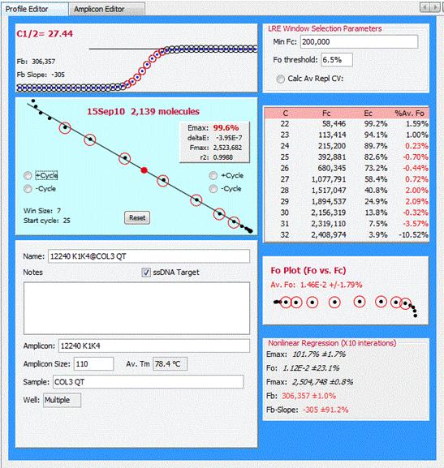

The Editor Panel, located in the centre of the User Interface, consists of two windows used to view/edit profiles and amplicons. Selection of either a profile or amplicon within the Explorer Panel will trigger the corresponding editor window to appear. As shown here, the Profile Editor window contains several panels that presents data generated by the selected profile, which is this case is a sample profile:

See Profile Editor Window and Amplicon Editor Window for additional details.